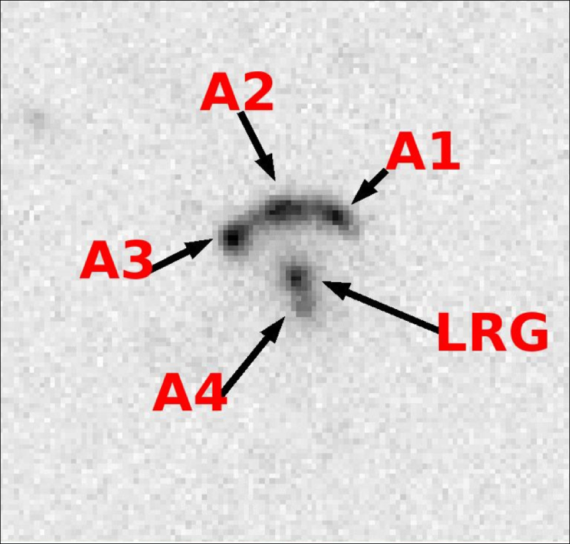

November 7, 2006
Gravity helps SDSS-II reveal a brilliant jewel of the early universe

Allam and the team confirmed the finding using this image from the 3.5-meter telescope at Apache Point Observatory in New Mexico. The faint, fourth image of the Lyman break galaxy is visible just below the central galaxy.
(Credit - Allam, SDSS-II collaboration)